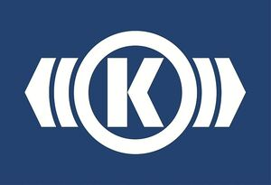

Trade Mark Journal No.2025/043 24 October 2025
WO0000001880131 (6,7,19,37,39,42)
Office of origin: Germany
Date of International Registration:30 July 2025
Date of designation in the UK:
30 July 2025

the mark contains the colours blue and white.
International priority date claimed: 28 March 2025
(Germany)
- Class 6
- Common metals and their alloys; metal building materials; metal containers for storage or transport of goods; non-electric cables and wires of common metal; small items of metal hardware; transportable buildings of metal; metal tracks for rail vehicles; railway switches.
- Class 7
- Mechanical switch machines for switching metal railway crossovers; machine coupling and transmission components (except for land vehicles); motors and engines (except for land vehicles); machine tools; compressors; compressed air systems, namely compressed air machines, compressed air engines, compressed air generators for vehicles; compressed air supply systems, namely air compressors for vehicle compressed air systems, air intake systems and components for vehicles, air intake systems and components for motor and engines; door systems, namely drive devices for opening and closing platform screen doors; pumps [machines]; pneumatic, hydraulic controls for motors.
- Class 19
- Building materials, not of metal; non-luminous and non-mechanical signs, not of metal; railway sleepers, not of metal.
- Class 37
- Assembly, modernisation, maintenance, overhauling and repair of vehicles; maintenance and repair of land vehicles; assembly, installation, modernisation, maintenance, overhauling and repair of electric and electronic apparatus, in particular in vehicles; maintenance and repair of motor vehicle engines; assembly [installation] of parts for vehicles; repair and overhaul of compressors, dampers, transmission components, brakes and their parts, control units, valves [machine parts], pedal systems, clutches, motor vehicle engines, heating, ventilating, air conditioning apparatus and air treatment apparatus for land vehicles; overhaul of worn or partially destroyed machines; vehicle repair consultancy; advisory services relating to the maintenance and repair of mechanical and electrical equipment; installation of building automation equipment; maintenance and repair of computer hardware; installation, maintenance and repair of telecommunications equipment; maintenance of railway track; installation of traffic management systems.
- Class 39
- Traffic information; transportation information; transport.
- Class 42
- Scientific and technological services; scientific and industrial research; engineering research; design services, namely technical design services; engineering services; engineering services relating to energy supply systems; engineering services relating to information technology; preparation of data processing programmes; software as a service [SaaS] featuring software for machine learning; software as a service [SaaS] services featuring software for machine learning, deep learning and deep neural networks; design of office automation equipment; design of face recognition software; technological research relating to iris recognition; technological research relating to ultrasonic fingerprint recognition; creation of control programs for automated measurement, assembly, adjustment, and related visualisation; development and testing of computing methods, algorithms and software; design of computer hardware; design of software; design of computer database; preparation of data processing programmes; software development; installation, updating and maintenance of computer software; computer diagnostic services; industrial testing; quality control testing; conducting engineering surveys; testing, analysis and evaluation of the goods and services of others for the purpose of certification; materials testing and analysing; providing information in the field of product design; providing information in the field of product development; providing information about industrial analysis and research services; technological consultancy; engineering consultancy services; information technology [IT] consultancy; advisory services relating to material testing; consultation services relating to computer software; consultation services relating to computer systems; consultation services relating to computer hardware.
Knorr-Bremse Aktiengesellschaft
Representative: Galion IP GmbH, Perlacher Str. 8, 82031 Grünwald, GERMANY